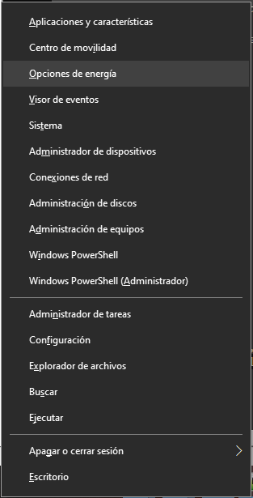
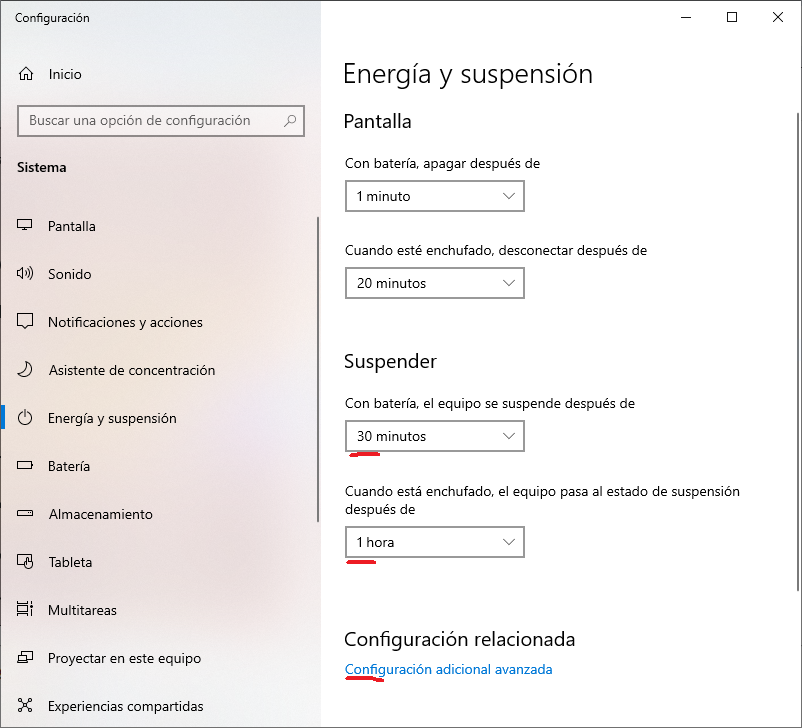
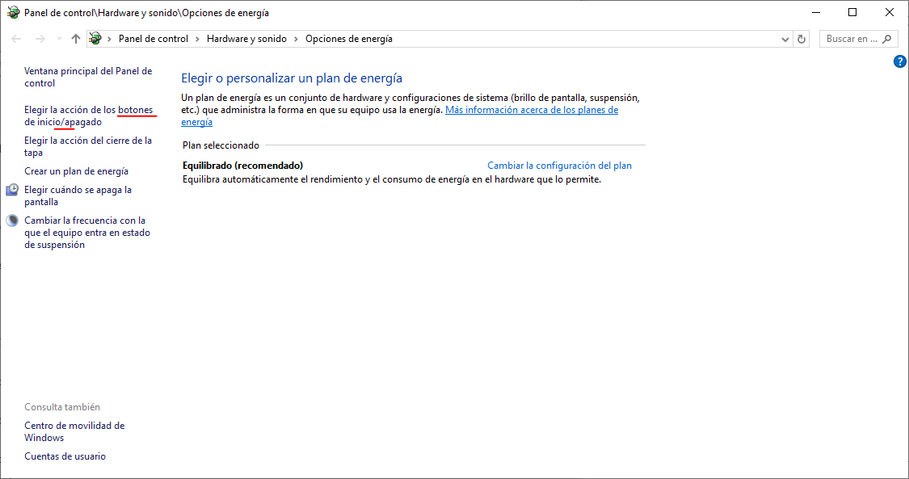
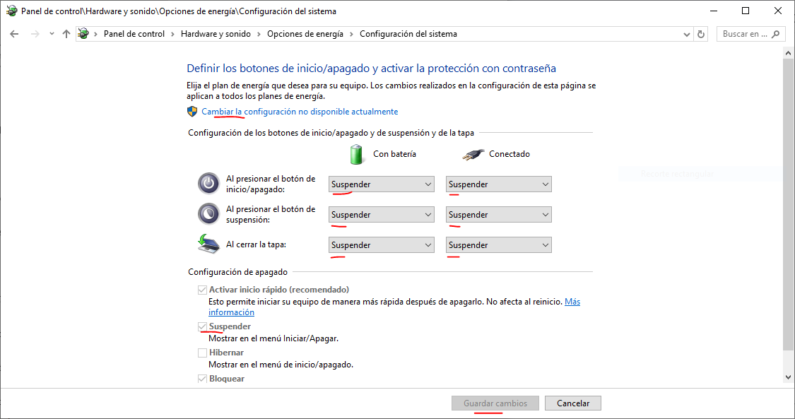

Al finalizar la instalación de Windows en este equipo, puede presentarse un problema de pantalla vacía al reiniciar.
Preferiblemente, durante la instalación, antes de reiniciar, ejecute lo indicado en Sección B
Si no es posible, y al reiniciar se presenta una pantalla vacía, ejecute lo indicado en Sección A y Sección B.
El Apéndice A contiene una referencia sobre los leds / luces.
Presione [Ctrl] + [x] para mostrar menú de windows
Presione [o] para Opciones de Energía
Presione [Tab] dos veces para poner el foco en "Suspender - Con batería (...)".
Presione más de 10 veces [FlechaArriba] para establecer el valor "1 minuto"
Presione [Tab] una vez para poner el foco en "Suspender - Cuando está enchufado (...)".
Presione más de 10 veces [FlechaArriba] para establecer el valor "1 minuto"
Presione [Alt] + [F4] para cerrar la ventana Opciones de Energía.
Espere 1 minuto, el equipo debe pasar a suspensión.
Una vez suspendido el equipo, presione botón de encendido para reanudarlo.
La pantalla debe haberse recuperado.
Si el botón de encendido no tiene asignada la función de suspensión, ejecute la Sección B.


Presione [Ctrl] + [x] para mostrar menú de windows
Presione [o] para Opciones de Energía
Presione "Configuración Avanzada (...)".
Presione "Asignar acción de botones de encendido/inicio (...)".
Presione "Cambiar la configuración no disponible actualmente".
En todas las configuraciones de botones (total 6), asigne "Suspender".
En "Configuración Apagado - Suspender", activar casilla "Mostrar en Menú Inicio/Apagar".
(Imágenes de sección anterior son también aplicables aquí)


De izquierda a derecha:
Encendido
Disco (duro / estado sólido)
Batería (cargando / bajo nivel)
WiFi
All rights reserved.
Last update: 2024-08-18 06:44 GMT-04:00